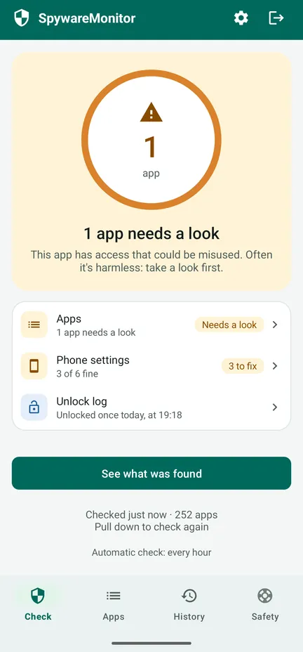
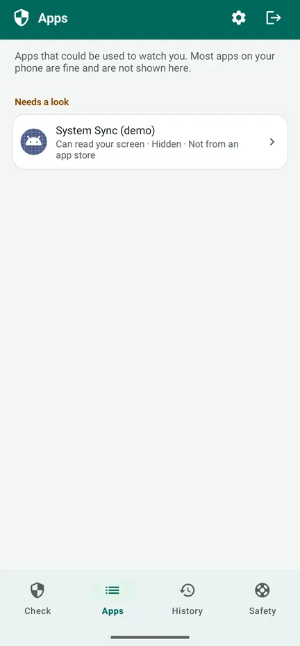
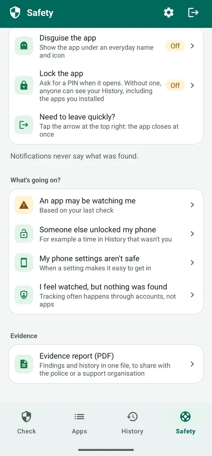
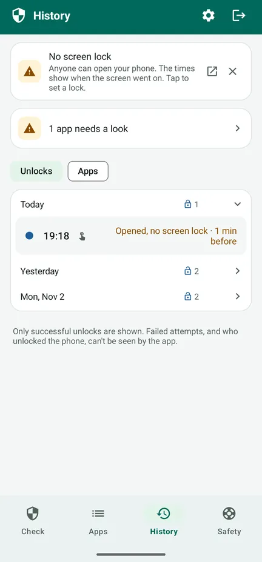

Kijkt iemand mee op je telefoon?
SpywareMonitor controleert welke apps op je Android-telefoon gebruikt kunnen worden om je te bespioneren – en legt in gewone taal uit waarom.
Voor iedereen die vreest dat een partner, ex of iemand anders hem of haar stiekem via de telefoon volgt. Geen internet, geen reclame, geen account: er verlaat niets je telefoon.
Ontdek het op Google Play Stap voor stap uitgelegd (Engels)
Gratis op Google Play voor Android 8 en nieuwer, met een losse Pro-upgrade als je wilt. De app is in het Nederlands, Noors en Engels.

Bekende stalkerware
132 stalkerware-apps, herkend aan naam en ondertekeningscertificaat.
Verborgen apps
Apps zonder icoon, of met een naam die doet alsof ze bij Android horen.
Apps die kunnen meekijken
Apps die je scherm of meldingen lezen, of apparaatbeheerder zijn.
Telefooninstellingen
Geen schermvergrendeling, USB-foutopsporing of andere instellingen die binnenkomen makkelijk maken.
Veilige volgende stappen
Wat je kunt doen, in een veilige volgorde, zodat je de ander niet waarschuwt.
Er verlaat niets je telefoon
Geen internettoegang: geen reclame, geen tracking, geen account.
Zo ziet het eruit
Bekijk de rondleiding van 83 seconden (Engelstalig) – hoe de app je telefoon controleert, wat oranje en rood betekenen en wat je daarna doet – of bekijk de schermen. Bekijk op YouTube



Gratis: de controle
- Controleert elke app, en de lijst met bekende stalkerware
- Oranje: toegang die misbruikt kan worden – vaak onschuldig, dus kijk eerst even. Rood: bekende stalkerware.
- De redenen bij elke app, en wie hem gemaakt heeft
- Telefooninstellingen, elk met een knop om het op te lossen
- Het tabblad Veiligheid: stappen voor jouw situatie, in een veilige volgorde
- Snel weg: het pijltje rechtsboven sluit de app meteen
Pro: één betaling, geen abonnement
- Automatische controles elk uur, met één schakelaar. Een melding zegt nooit wat er gevonden is – alleen de naam van de app en "Tik om te openen" – en kan een uur wachten.
- Ontgrendellogboek: wanneer je telefoon werd ontgrendeld, zodat je merkt of iemand hem gebruikt heeft
- Geschiedenis: wanneer welke app werd geïnstalleerd, toegang kreeg of werd verwijderd
- Bewijsrapport (PDF) in de taal van de app, om aan de politie of een hulporganisatie te laten zien
- Vermommen en vergrendelen: toon de app als Notities, Weer, Recepten of Planner, met een pincode of vingerafdruk
Je geschiedenis wordt in de gratis versie al bijgehouden. De aankoopbevestiging van Google per e-mail en je bestelgeschiedenis in Play noemen de app.
Aanbevolen instelling: bescherm de app in 5 stappen (Engels)
Voordat je iets verwijdert
- Spyware verwijderen kan de persoon die het installeerde waarschuwen. Denk eerst aan je veiligheid.
- Bewaar bewijs: het bewijsrapport, schermafbeeldingen, of foto's met een andere telefoon.
- Praat met iemand die je vertrouwt, de politie of een hulplijn, liefst vanaf een telefoon die niet wordt bekeken. De meeste landen hebben een gratis hulplijn voor huiselijk geweld of misbruik.
- Verander belangrijke wachtwoorden vanaf een ander apparaat.
- In acuut gevaar: bel 112.
Het tabblad Veiligheid in de app leidt je hier doorheen voor jouw situatie. Bescherm eerst de app zelf: vermom hem en vergrendel hem met een pincode.
De details
Alles wat hij controleert
- 132 bekende stalkerware-apps (naam en ondertekeningscertificaat)
- Apps zonder icoon in het app-overzicht
- Toegankelijkheid, toegang tot meldingen en apparaatbeheer
- Apps die uit een bestand of een andere bron zijn geïnstalleerd in plaats van uit een app-winkel
- Riskante combinaties, zoals locatie op de achtergrond samen met microfoon en sms
- Schermvergrendeling, USB-foutopsporing, ontwikkelaarsopties, apps die andere apps mogen installeren, een telefoon die door iemand anders wordt beheerd
- Tekenen dat de telefoon geroot is, alleen getoond als ze gevonden worden
Privacy die je kunt controleren
SpywareMonitor heeft geen internettoegang, dus hij kan niets ergens naartoe sturen. De gegevens gaan niet mee in de cloudback-up. De lijst met bekende stalkerware zit in de app en wordt met de app bijgewerkt. Privacyverklaring (Engels).
Eerlijk over de grenzen
Geen enkele scanner kan beloven dat een telefoon 100% schoon is. Apps in een werkprofiel, en spyware op een telefoon die goed verborgen geroot is, zijn voor geen enkele gewone app zichtbaar. SpywareMonitor vertelt het je als hij tekenen van rooten vindt. Volgen kan ook via accounts, zonder app.
Talen en telefoons
Nederlands, Noors en Engels. Android 8 en nieuwer.
Veelgestelde vragen
Hoe zie ik of er spyware op mijn Android-telefoon staat?
Let op apps die je niet kent en die verborgen zijn in het app-overzicht, je scherm (toegankelijkheid) of je meldingen kunnen lezen, apparaatbeheerder zijn, of uit een bestand zijn geïnstalleerd in plaats van uit de Play Store. SpywareMonitor controleert dit allemaal en vergelijkt je apps met een lijst van 132 bekende stalkerware-apps.
Stuurt SpywareMonitor mijn gegevens ergens naartoe?
Nee. De app heeft geen internettoegang, dus er kan niets je telefoon verlaten. Geen account, geen reclame en geen analyse.
Moet ik spyware meteen verwijderen?
Verwijderen kan de persoon die het installeerde waarschuwen. Denk eerst aan je veiligheid, bewaar bewijs, en praat met iemand die je vertrouwt, de politie of een hulplijn, liefst vanaf een telefoon die niet wordt bekeken.
Vindt SpywareMonitor elke soort spyware?
Geen enkele scanner kan dat beloven. Apps in een werkprofiel en spyware op een geroote telefoon zijn voor geen enkele gewone app zichtbaar. SpywareMonitor is daar eerlijk over en laat zien wat hij kan controleren.
Is SpywareMonitor gratis?
De controle, de telefooninstellingen en de veiligheidsstappen zijn gratis. Pro is één betaling, geen abonnement, en voegt automatische controles met discrete meldingen toe, Geschiedenis, een ontgrendellogboek, een bewijsrapport als PDF, en een vermomming en pincode voor de app.
Kan ik SpywareMonitor verbergen op mijn telefoon?
Met Pro kun je de app vermommen als Notities, Weer, Recepten of Planner en vergrendelen met een pincode. De meldingen zeggen nooit wat er gevonden is. Het pijltje rechtsboven sluit de app meteen. De aankoopbevestiging van Google per e-mail en je bestelgeschiedenis in Play noemen de app wel.
Ik voel me bekeken, maar er is niets gevonden. Wat nu?
Volgen gebeurt vaak via accounts, niet via apps. Zet locatie delen in Google Maps uit, controleer de apparaten op je Google-account en je herstel-e-mailadres en -nummer, en zoek naar een verborgen tracker. Doe wijzigingen aan je account vanaf een ander apparaat.
Meer hulp (in het Engels)
Meer apps van Nordic Appworks
UpdateMonitor — een geschiedenis van elke app-update, installatie en verwijdering op je telefoon, met veranderde machtigingen. RebootMonitor — wanneer je telefoon voor het laatst opnieuw is opgestart. Net als SpywareMonitor: zonder internet en zonder reclame.
Contact
Vragen of feedback: support@spywaremonitor.app
De lijst met bekende stalkerware komt van de stalkerware-indicatoren van Echap, onder licentie CC BY 4.0.